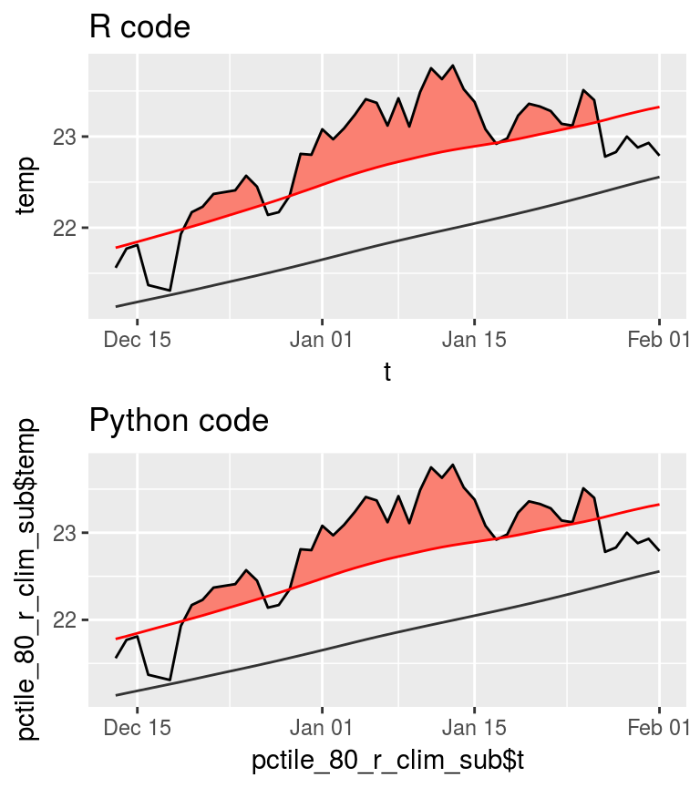

r_vs_python_more.RmdBuilding on the identical default functionality shared between the two languages, this vignette goes further to look at the additional functionality contained within the two packages. Along the way the outputs are checked for consistency and all of the arguments for all of the functions are tweaked to look for irregularities. This is necessary before only one language is used to further investigate best practices for dealing with sub-optimal time series in the detection of MHWs.
Preferably this step could have been done programmatically, without creating an army of outputs as seen below. The R package reticulate does not seem to want to play along though so I must rather run the Python code, save the outputs, load them into R and compare the results natively in just R… So let’s get started.
library(tidyverse)
library(ggpubr)
library(heatwaveR)library(reticulate)
use_condaenv("py27")import numpy as np
from datetime import date
import pandas as pd
import marineHeatWaves as mhw
# The date values
t = np.arange(date(1982,1,1).toordinal(),date(2014,12,31).toordinal()+1)
# The temperature values
sst = np.loadtxt(open("sst_WA.csv", "r"), delimiter = ',', skiprows = 1)# The default python output from the previous comparison vignette
default_py_event <- read_csv("mhws_py.csv")
default_py_clim <- read_csv("clim_py.csv")# The default R output
default_r <- detect_event(ts2clm(data = sst_WA,
climatologyPeriod = c("1982-01-01", "2014-12-31")))compare_event <- function(res_event_R, res_event_Python){
# Remove non-numeric columns
res_event_num <- res_event_R %>%
select_if(is.numeric)
# Run the loop
res_event_cor <- data.frame()
for(i in 1:length(colnames(res_event_num))){
if(colnames(res_event_num)[i] %in% colnames(res_event_Python)){
x1 <- res_event_R[colnames(res_event_R) == colnames(res_event_num)[i]]
x2 <- res_event_Python[colnames(res_event_Python) == colnames(res_event_num)[i]]
x <- data.frame(r = cor(x1, x2), var = colnames(res_event_num)[i])
colnames(x)[1] <- "r"
rownames(x) <- NULL
} else {
x <- data.frame(r = NA, var = colnames(res_event_num)[i])
# colnames(x) <- colnames(res_event_R)[i]
}
res_event_cor <- rbind(res_event_cor, x)
}
return(res_event_cor)
}# Compare default clims and intensities
cor(default_r$climatology$seas, default_py_clim$seas)## [1] 0.9999999sum(default_r$climatology$seas) - sum(default_py_clim$seas)## [1] -1.98122cor(default_r$climatology$thresh, default_py_clim$thresh)## [1] 0.9999996sum(default_r$climatology$thresh) - sum(default_py_clim$thresh)## [1] -6.563516sum(default_r$event$intensity_cumulative) - sum(default_py_event$intensity_cumulative)## [1] 0.157388sum(default_r$event$intensity_max) - sum(default_py_event$intensity_max)## [1] 0.008520925# Compare default events
default_event <- compare_event(default_r$event, default_py_event)
default_event## r var
## 1 NA event_no
## 2 1.0000000 index_start
## 3 1.0000000 index_peak
## 4 1.0000000 index_end
## 5 1.0000000 duration
## 6 0.9999991 intensity_mean
## 7 0.9999997 intensity_max
## 8 0.9996080 intensity_var
## 9 1.0000000 intensity_cumulative
## 10 0.9999971 intensity_mean_relThresh
## 11 0.9999994 intensity_max_relThresh
## 12 0.9995685 intensity_var_relThresh
## 13 0.9999996 intensity_cumulative_relThresh
## 14 1.0000000 intensity_mean_abs
## 15 0.9990733 intensity_max_abs
## 16 0.9997267 intensity_var_abs
## 17 1.0000000 intensity_cumulative_abs
## 18 1.0000000 rate_onset
## 19 1.0000000 rate_declinepctile comparisonsHere we look at a few possible settings for the pctile argument and ensure that everything matches up.
First run and save the Python output.
# pctile = 80
mhws, clim = mhw.detect(t, sst, pctile = 80)
mhws_df = pd.DataFrame.from_dict(mhws)
mhws_df.to_csv('mhws_py_pctile_80.csv', sep = ',', index = False)
clim_df = pd.DataFrame.from_dict(clim)
clim_df.to_csv('clim_py_pctile_80.csv', sep = ',', index = False)
# pctile = 95
mhws, clim = mhw.detect(t, sst, pctile = 95)
mhws_df = pd.DataFrame.from_dict(mhws)
mhws_df.to_csv('mhws_py_pctile_95.csv', sep = ',', index = False)
clim_df = pd.DataFrame.from_dict(clim)
clim_df.to_csv('clim_py_pctile_95.csv', sep = ',', index = False)
# pctile = 99
mhws, clim = mhw.detect(t, sst, pctile = 99)
mhws_df = pd.DataFrame.from_dict(mhws)
mhws_df.to_csv('mhws_py_pctile_99.csv', sep = ',', index = False)
clim_df = pd.DataFrame.from_dict(clim)
clim_df.to_csv('clim_py_pctile_99.csv', sep = ',', index = False)Then run the R output.
pctile_80_r <- detect_event(ts2clm(data = sst_WA, pctile = 80,
climatologyPeriod = c("1982-01-01", "2014-12-31")))
pctile_95_r <- detect_event(ts2clm(data = sst_WA, pctile = 95,
climatologyPeriod = c("1982-01-01", "2014-12-31")))
pctile_99_r <- detect_event(ts2clm(data = sst_WA, pctile = 99,
climatologyPeriod = c("1982-01-01", "2014-12-31")))Lastly load the Python output and compare the two.
# Load Python
pctile_80_py_event <- read_csv("mhws_py_pctile_80.csv")
pctile_80_py_clim <- read_csv("clim_py_pctile_80.csv")
pctile_95_py_event <- read_csv("mhws_py_pctile_95.csv")
pctile_95_py_clim <- read_csv("clim_py_pctile_95.csv")
pctile_99_py_event <- read_csv("mhws_py_pctile_99.csv")
pctile_99_py_clim <- read_csv("clim_py_pctile_99.csv")
# Compare clims and intensities
# 80
cor(pctile_80_r$climatology$seas, pctile_80_py_clim$seas)## [1] 0.9999999sum(pctile_80_r$climatology$seas) - sum(pctile_80_py_clim$seas)## [1] -1.98122cor(pctile_80_r$climatology$thresh, pctile_80_py_clim$thresh)## [1] 0.9999982sum(pctile_80_r$climatology$thresh) - sum(pctile_80_py_clim$thresh)## [1] -13.86432sum(pctile_80_r$event$intensity_cumulative) - sum(pctile_80_py_event$intensity_cumulative)## [1] 2.430907sum(pctile_80_r$event$intensity_max) - sum(pctile_80_py_event$intensity_max)## [1] -1.103187# 95
cor(pctile_95_r$climatology$seas, pctile_95_py_clim$seas)## [1] 0.9999999sum(pctile_95_r$climatology$seas) - sum(pctile_95_py_clim$seas)## [1] -1.98122cor(pctile_95_r$climatology$thresh, pctile_95_py_clim$thresh)## [1] 0.9999999sum(pctile_95_r$climatology$thresh) - sum(pctile_95_py_clim$thresh)## [1] -3.382435sum(pctile_95_r$event$intensity_cumulative) - sum(pctile_95_py_event$intensity_cumulative)## [1] 0.05814455sum(pctile_95_r$event$intensity_max) - sum(pctile_95_py_event$intensity_max)## [1] 0.007503145# 99
cor(pctile_99_r$climatology$seas, pctile_99_py_clim$seas)## [1] 0.9999999sum(pctile_99_r$climatology$seas) - sum(pctile_99_py_clim$seas)## [1] -1.98122cor(pctile_99_r$climatology$thresh, pctile_99_py_clim$thresh)## [1] 0.9999944sum(pctile_99_r$climatology$thresh) - sum(pctile_99_py_clim$thresh)## [1] 28.37769sum(pctile_99_r$event$intensity_cumulative) - sum(pctile_99_py_event$intensity_cumulative)## [1] -0.004070026sum(pctile_99_r$event$intensity_max) - sum(pctile_99_py_event$intensity_max)## [1] -0.0004070026# Compare events
# pctile_80_event <- compare_event(pctile_80_r$event, pctile_80_py_event)
pctile_95_event <- compare_event(pctile_95_r$event, pctile_95_py_event)
pctile_95_event## r var
## 1 NA event_no
## 2 1.0000000 index_start
## 3 1.0000000 index_peak
## 4 1.0000000 index_end
## 5 1.0000000 duration
## 6 0.9999988 intensity_mean
## 7 0.9999996 intensity_max
## 8 0.9988690 intensity_var
## 9 1.0000000 intensity_cumulative
## 10 0.9999979 intensity_mean_relThresh
## 11 0.9999468 intensity_max_relThresh
## 12 0.9988428 intensity_var_relThresh
## 13 0.9999999 intensity_cumulative_relThresh
## 14 1.0000000 intensity_mean_abs
## 15 0.9997819 intensity_max_abs
## 16 0.9990655 intensity_var_abs
## 17 1.0000000 intensity_cumulative_abs
## 18 0.9999998 rate_onset
## 19 1.0000000 rate_declinepctile_99_event <- compare_event(pctile_99_r$event, pctile_99_py_event)
pctile_99_event## r var
## 1 NA event_no
## 2 1.0000000 index_start
## 3 1.0000000 index_peak
## 4 1.0000000 index_end
## 5 1.0000000 duration
## 6 1.0000000 intensity_mean
## 7 1.0000000 intensity_max
## 8 0.9995133 intensity_var
## 9 1.0000000 intensity_cumulative
## 10 0.9999046 intensity_mean_relThresh
## 11 0.9999951 intensity_max_relThresh
## 12 0.9993605 intensity_var_relThresh
## 13 0.9999383 intensity_cumulative_relThresh
## 14 1.0000000 intensity_mean_abs
## 15 1.0000000 intensity_max_abs
## 16 0.9991256 intensity_var_abs
## 17 1.0000000 intensity_cumulative_abs
## 18 1.0000000 rate_onset
## 19 1.0000000 rate_declineThere appears to be an issue with the results when the threshold is set to pctile = 80 as Python detects one more event than R. Let’s take a closer look.
pctile_80_r_event <- pctile_80_r$event
pctile_80_py_event$date_start[!pctile_80_py_event$date_start %in% pctile_80_r_event$date_start]## [1] "2013-12-30"The issue appears to be that the R code is joining across a four day gap, which it shouldn’t do. So I assume that the threshold is different between the languages. This is curious as the seasonal and threshold climatologies correlate nearly perfectly. Diving deeper, let’s pull out the clim values around the time of this event and see what we see.
pctile_80_r_clim <- pctile_80_r$climatology
pctile_80_r_clim_sub <- pctile_80_r_clim[11670:11720, ]
pctile_80_py_clim_sub <- pctile_80_py_clim[11670:11720, ]
r_fig <- ggplot(pctile_80_r_clim_sub, aes(x = t, y = temp)) +
geom_flame(aes(y2 = thresh)) +
geom_line() +
geom_line(aes(y = thresh), colour = "Red") +
geom_line(aes(y = seas), colour = "grey20") +
ggtitle("R code")
py_fig <- ggplot(pctile_80_py_clim_sub,
aes(x = pctile_80_r_clim_sub$t, y = pctile_80_r_clim_sub$temp)) +
geom_flame(aes(y2 = thresh)) +
geom_line() +
geom_line(aes(y = thresh), colour = "Red") +
geom_line(aes(y = seas), colour = "grey20") +
ggtitle("Python code")
ggarrange(r_fig, py_fig, ncol = 1, nrow = 2)
As we may see in the figure above, the difference is not perceptible to the human eye. Looking very closely at the clim outputs manually one may see that in the R code, the threshold on 2013-12-29 is just below the temperature value due to a rounding difference from the Python code at the third decimal place.
Also above one may see that even though the values correlate nearly perfectly, the sum of the seasonal climatology value output by R are 1.98122 less than the Python output. Considering that there are 12053 values, the average difference is only 0.00016, which is not terribly much at all. The issue appears to be in the calculation of the threshold climatology. This value is not consistently different based on the pctile value used. It varies quite a bit. With the sum difference at pctile = 80 being -13.86432, the default of pctile = 90 being -6.563516, pctile = 95 being -3.382435, and pctile = 80 being 28.37769. This is strong evidence that the threshold values are being calculated using some different method that needs to be addressed. That being said, even at the largest difference of 28.37769, that is still only an average difference per row of 0.002354409
Digging deeper still, let’s pull up the old RmarineHeatWaves code and run another comparison with that to see if this difference is due to newer changes in the development of the heatwaveR package.
ts <- RmarineHeatWaves::make_whole(sst_WA)
default_r_old <- RmarineHeatWaves::detect(data = ts, climatology_start = 1982, climatology_end = 2014)
default_r_old_event <- default_r_old$event
default_r_old_clim <- default_r_old$clim
# Compare default new and old R clims and intensities
cor(default_r$climatology$seas, default_r_old_clim$seas_clim_year)## [1] 1sum(default_r$climatology$seas) - sum(default_r_old_clim$seas_clim_year)## [1] 0cor(default_r$climatology$thresh, default_r_old_clim$thresh_clim_year)## [1] 1sum(default_r$climatology$thresh) - sum(default_r_old_clim$thresh_clim_year)## [1] 5.820766e-11sum(default_r$event$intensity_cumulative) - sum(default_py_event$intensity_cumulative)## [1] 0.157388sum(default_r$event$intensity_max) - sum(default_py_event$intensity_max)## [1] 0.008520925# Compare default new and old R clims
default_event <- compare_event(default_r$event, default_r_old_event)
default_event## r var
## 1 1 event_no
## 2 1 index_start
## 3 NA index_peak
## 4 NA index_end
## 5 1 duration
## 6 NA intensity_mean
## 7 NA intensity_max
## 8 NA intensity_var
## 9 NA intensity_cumulative
## 10 NA intensity_mean_relThresh
## 11 NA intensity_max_relThresh
## 12 NA intensity_var_relThresh
## 13 NA intensity_cumulative_relThresh
## 14 NA intensity_mean_abs
## 15 NA intensity_max_abs
## 16 NA intensity_var_abs
## 17 NA intensity_cumulative_abs
## 18 1 rate_onset
## 19 1 rate_decline# Compare Python and old R clims and intensities
cor(default_py_clim$seas, default_r_old_clim$seas_clim_year)## [1] 0.9999999sum(default_py_clim$seas) - sum(default_r_old_clim$seas_clim_year)## [1] 1.98122cor(default_py_clim$thresh, default_r_old_clim$thresh_clim_year)## [1] 0.9999996sum(default_py_clim$thresh) - sum(default_r_old_clim$thresh_clim_year)## [1] 6.563516sum(default_py_event$intensity_cumulative) - sum(default_r_old_event$int_cum)## [1] -0.157388sum(default_py_event$intensity_max) - sum(default_r_old_event$int_max)## [1] -0.008520925# Compare Python and old R clims
default_event <- compare_event(default_r_old_event, default_py_event)
default_event## r var
## 1 1 index_start
## 2 NA index_stop
## 3 NA event_no
## 4 1 duration
## 5 NA int_mean
## 6 NA int_max
## 7 NA int_var
## 8 NA int_cum
## 9 NA int_mean_rel_thresh
## 10 NA int_max_rel_thresh
## 11 NA int_var_rel_thresh
## 12 NA int_cum_rel_thresh
## 13 NA int_mean_abs
## 14 NA int_max_abs
## 15 NA int_var_abs
## 16 NA int_cum_abs
## 17 NA int_mean_norm
## 18 NA int_max_norm
## 19 1 rate_onset
## 20 1 rate_declinesmoothPercentileWidth comparisonsSeeing now that the choice of the pctile threshold may create results different enough as to produce a different counts of events, we need to look closer at the different arguments. I have my suspicions that the smoothing of the threshold values may be the culprit here.
spw_no_r <- detect_event(ts2clm(data = sst_WA, smoothPercentile = FALSE,
climatologyPeriod = c("1982-01-01", "2014-12-31")))
spw_11_r <- detect_event(ts2clm(data = sst_WA, smoothPercentileWidth = 11,
climatologyPeriod = c("1982-01-01", "2014-12-31")))
spw_51_r <- detect_event(ts2clm(data = sst_WA, smoothPercentileWidth = 51,
climatologyPeriod = c("1982-01-01", "2014-12-31")))# smoothPercentileWidth = FALSE
mhws, clim = mhw.detect(t, sst, smoothPercentile = False)
mhws_df = pd.DataFrame.from_dict(mhws)
mhws_df.to_csv('mhws_py_spw_no.csv', sep = ',', index = False)
clim_df = pd.DataFrame.from_dict(clim)
clim_df.to_csv('clim_py_spw_no.csv', sep = ',', index = False)
# smoothPercentileWidth = 11
mhws, clim = mhw.detect(t, sst, smoothPercentileWidth = 11)
mhws_df = pd.DataFrame.from_dict(mhws)
mhws_df.to_csv('mhws_py_spw_11.csv', sep = ',', index = False)
clim_df = pd.DataFrame.from_dict(clim)
clim_df.to_csv('clim_py_spw_11.csv', sep = ',', index = False)
# smoothPercentileWidth = 51
mhws, clim = mhw.detect(t, sst, smoothPercentileWidth = 51)
mhws_df = pd.DataFrame.from_dict(mhws)
mhws_df.to_csv('mhws_py_spw_51.csv', sep = ',', index = False)
clim_df = pd.DataFrame.from_dict(clim)
clim_df.to_csv('clim_py_spw_51.csv', sep = ',', index = False)# Load Python
spw_no_py_event <- read_csv("mhws_py_spw_no.csv")
spw_no_py_clim <- read_csv("clim_py_spw_no.csv")
spw_11_py_event <- read_csv("mhws_py_spw_11.csv")
spw_11_py_clim <- read_csv("clim_py_spw_11.csv")
spw_51_py_event <- read_csv("mhws_py_spw_51.csv")
spw_51_py_clim <- read_csv("clim_py_spw_51.csv")
# Compare clims and intensities
# no smoothing
cor(spw_no_r$climatology$seas, spw_no_py_clim$seas)## [1] 0.9999992sum(spw_no_r$climatology$seas) - sum(spw_no_py_clim$seas)## [1] -2.061954cor(spw_no_r$climatology$thresh, spw_no_py_clim$thresh)## [1] 0.9999965sum(spw_no_r$climatology$thresh) - sum(spw_no_py_clim$thresh)## [1] -6.499sum(spw_no_r$event$intensity_cumulative) - sum(spw_no_py_event$intensity_cumulative)## [1] 0.1080191sum(spw_no_r$event$intensity_max) - sum(spw_no_py_event$intensity_max)## [1] 0.01519676# 11 days
cor(spw_11_r$climatology$seas, spw_11_py_clim$seas)## [1] 0.9999997sum(spw_11_r$climatology$seas) - sum(spw_11_py_clim$seas)## [1] -1.99972cor(spw_11_r$climatology$thresh, spw_11_py_clim$thresh)## [1] 0.999999sum(spw_11_r$climatology$thresh) - sum(spw_11_py_clim$thresh)## [1] -6.317182sum(spw_11_r$event$intensity_cumulative) - sum(spw_11_py_event$intensity_cumulative)## [1] 0.1191614sum(spw_11_r$event$intensity_max) - sum(spw_11_py_event$intensity_max)## [1] 0.005962097# 51 days
cor(spw_51_r$climatology$seas, spw_51_py_clim$seas)## [1] 0.9999999sum(spw_51_r$climatology$seas) - sum(spw_51_py_clim$seas)## [1] -1.97723cor(spw_51_r$climatology$thresh, spw_51_py_clim$thresh)## [1] 0.9999998sum(spw_51_r$climatology$thresh) - sum(spw_51_py_clim$thresh)## [1] -6.616647sum(spw_51_r$event$intensity_cumulative) - sum(spw_51_py_event$intensity_cumulative)## [1] 0.1498496sum(spw_51_r$event$intensity_max) - sum(spw_51_py_event$intensity_max)## [1] 0.006400502# Compare events
spw_no_event <- compare_event(spw_no_r$event, spw_no_py_event)
spw_no_event## r var
## 1 NA event_no
## 2 1.0000000 index_start
## 3 1.0000000 index_peak
## 4 1.0000000 index_end
## 5 1.0000000 duration
## 6 0.9999980 intensity_mean
## 7 0.9999992 intensity_max
## 8 0.9993830 intensity_var
## 9 0.9999999 intensity_cumulative
## 10 0.9999956 intensity_mean_relThresh
## 11 0.9997743 intensity_max_relThresh
## 12 0.9993297 intensity_var_relThresh
## 13 0.9999995 intensity_cumulative_relThresh
## 14 1.0000000 intensity_mean_abs
## 15 0.9989767 intensity_max_abs
## 16 0.9995816 intensity_var_abs
## 17 1.0000000 intensity_cumulative_abs
## 18 0.9999992 rate_onset
## 19 0.9999995 rate_declinespw_11_event <- compare_event(spw_11_r$event, spw_11_py_event)
spw_11_event## r var
## 1 NA event_no
## 2 1.0000000 index_start
## 3 1.0000000 index_peak
## 4 1.0000000 index_end
## 5 1.0000000 duration
## 6 0.9999983 intensity_mean
## 7 0.9999994 intensity_max
## 8 0.9994326 intensity_var
## 9 0.9999999 intensity_cumulative
## 10 0.9999963 intensity_mean_relThresh
## 11 0.9999580 intensity_max_relThresh
## 12 0.9994217 intensity_var_relThresh
## 13 0.9999996 intensity_cumulative_relThresh
## 14 1.0000000 intensity_mean_abs
## 15 0.9989804 intensity_max_abs
## 16 0.9996101 intensity_var_abs
## 17 1.0000000 intensity_cumulative_abs
## 18 0.9999985 rate_onset
## 19 0.9999995 rate_declinespw_51_event <- compare_event(spw_51_r$event, spw_51_py_event)
spw_51_event## r var
## 1 NA event_no
## 2 1.0000000 index_start
## 3 1.0000000 index_peak
## 4 1.0000000 index_end
## 5 1.0000000 duration
## 6 0.9999995 intensity_mean
## 7 0.9999999 intensity_max
## 8 0.9996566 intensity_var
## 9 1.0000000 intensity_cumulative
## 10 0.9999969 intensity_mean_relThresh
## 11 0.9999678 intensity_max_relThresh
## 12 0.9996305 intensity_var_relThresh
## 13 0.9999996 intensity_cumulative_relThresh
## 14 1.0000000 intensity_mean_abs
## 15 0.9992145 intensity_max_abs
## 16 0.9997404 intensity_var_abs
## 17 1.0000000 intensity_cumulative_abs
## 18 1.0000000 rate_onset
## 19 1.0000000 rate_declineSurprisingly the smoothing window, regardless if it is applied or not, seems to make little difference. But again, let’s compare the old R code against Python as well.
ts <- RmarineHeatWaves::make_whole(sst_WA)
spw_no_r_old <- RmarineHeatWaves::detect(data = ts, climatology_start = 1982, climatology_end = 2014, smooth_percentile = FALSE)
spw_no_r_old_event <- spw_no_r_old$event
spw_no_r_old_clim <- spw_no_r_old$clim
# Compare new and old R code
sum(spw_no_r$climatology$seas) - sum(spw_no_r_old_clim$seas_clim_year)## [1] 0sum(spw_no_r$climatology$thresh) - sum(spw_no_r_old_clim$thresh_clim_year)## [1] 0# Compare old & new R against Python
sum(spw_no_py_clim$seas) - sum(spw_no_r_old_clim$seas_clim_year)## [1] 2.061954sum(spw_no_py_clim$seas) - sum(spw_no_r$climatology$seas)## [1] 2.061954sum(spw_no_py_clim$thresh) - sum(spw_no_r_old_clim$thresh_clim_year)## [1] 6.499sum(spw_no_py_clim$thresh) - sum(spw_no_r$climatology$thresh)## [1] 6.499windowHalfWidth comparisonsWe’ve now seen that the differences between both the new & old R code and the Python code hold consistently different regardless of the changing of the pctile or smoothWindowPercentile. This then leads me to think that this is just a rounding issue between the two languages, and that there is not some fundamentally different calculation happening somewhere in the code. That being said, it is still necessary to be thorough and so I’ll go through the rest of the arguments now. Starting with windowHalfWidth.
whw_3_r <- detect_event(ts2clm(data = sst_WA, windowHalfWidth = 3,
climatologyPeriod = c("1982-01-01", "2014-12-31")))
whw_7_r <- detect_event(ts2clm(data = sst_WA, windowHalfWidth = 7,
climatologyPeriod = c("1982-01-01", "2014-12-31")))# windowHalfWidth = 3
mhws, clim = mhw.detect(t, sst, windowHalfWidth = 3)
mhws_df = pd.DataFrame.from_dict(mhws)
mhws_df.to_csv('mhws_py_whw_3.csv', sep = ',', index = False)
clim_df = pd.DataFrame.from_dict(clim)
clim_df.to_csv('clim_py_whw_3.csv', sep = ',', index = False)
# windowHalfWidth = 7
mhws, clim = mhw.detect(t, sst, windowHalfWidth = 7)
mhws_df = pd.DataFrame.from_dict(mhws)
mhws_df.to_csv('mhws_py_whw_7.csv', sep = ',', index = False)
clim_df = pd.DataFrame.from_dict(clim)
clim_df.to_csv('clim_py_whw_7.csv', sep = ',', index = False)# Load Python
whw_3_py_event <- read_csv("mhws_py_whw_3.csv")
whw_3_py_clim <- read_csv("clim_py_whw_3.csv")
whw_7_py_event <- read_csv("mhws_py_whw_7.csv")
whw_7_py_clim <- read_csv("clim_py_whw_7.csv")
# Compare clims and intensities
# 3 days
cor(whw_3_r$climatology$seas, whw_3_py_clim$seas)## [1] 0.9999999sum(whw_3_r$climatology$seas) - sum(whw_3_py_clim$seas)## [1] -1.239599cor(whw_3_r$climatology$thresh, whw_3_py_clim$thresh)## [1] 0.9999999sum(whw_3_r$climatology$thresh) - sum(whw_3_py_clim$thresh)## [1] -3.037484sum(whw_3_r$event$intensity_cumulative) - sum(whw_3_py_event$intensity_cumulative)## [1] 0.1001013sum(whw_3_r$event$intensity_max) - sum(whw_3_py_event$intensity_max)## [1] 0.005394135# 7 days
cor(whw_7_r$climatology$seas, whw_7_py_clim$seas)## [1] 0.9999998sum(whw_7_r$climatology$seas) - sum(whw_7_py_clim$seas)## [1] -2.796456cor(whw_7_r$climatology$thresh, whw_7_py_clim$thresh)## [1] 0.999998sum(whw_7_r$climatology$thresh) - sum(whw_7_py_clim$thresh)## [1] -13.58655sum(whw_7_r$event$intensity_cumulative) - sum(whw_7_py_event$intensity_cumulative)## [1] 8.298912sum(whw_7_r$event$intensity_max) - sum(whw_7_py_event$intensity_max)## [1] 1.901123# Compare events
whw_3_event <- compare_event(whw_3_r$event, whw_3_py_event)
whw_3_event## r var
## 1 NA event_no
## 2 1.0000000 index_start
## 3 1.0000000 index_peak
## 4 1.0000000 index_end
## 5 1.0000000 duration
## 6 0.9999996 intensity_mean
## 7 0.9999999 intensity_max
## 8 0.9996481 intensity_var
## 9 1.0000000 intensity_cumulative
## 10 0.9999993 intensity_mean_relThresh
## 11 0.9999937 intensity_max_relThresh
## 12 0.9996044 intensity_var_relThresh
## 13 0.9999999 intensity_cumulative_relThresh
## 14 1.0000000 intensity_mean_abs
## 15 0.9993263 intensity_max_abs
## 16 0.9997487 intensity_var_abs
## 17 1.0000000 intensity_cumulative_abs
## 18 1.0000000 rate_onset
## 19 1.0000000 rate_decline# whw_7_event <- compare_event(whw_7_r$event, whw_7_py_event)
# whw_7_eventWe see here that the windowHalfWidth has a large effect on the difference between the results than anything else so far. The difference per row is still low at ~0.001 so isn’t much cause for alarm. We do however detect a different number of events if windowHalfWidth = 7. Let’s see how they differ.
whw_7_r_event <- whw_7_r$event
whw_7_r_event$date_start[!whw_7_r_event$date_start %in% whw_7_py_event$date_start]## [1] "2006-03-05"The difference lies in the R code detecting a five day event that the Python code must have seen as only 4 days or less. Again due to very narrow differences in the threshold values.
Let’s look if there is a difference between the old and new R code.
ts <- RmarineHeatWaves::make_whole(sst_WA)
whw_7_r_old <- RmarineHeatWaves::detect(data = ts, climatology_start = 1982, climatology_end = 2014, window_half_width = 7)
# Compare new and old R code
sum(whw_7_r$climatology$seas) - sum(whw_7_r_old$clim$seas_clim_year)## [1] -2.910383e-11sum(whw_7_r$climatology$thresh) - sum(whw_7_r_old$clim$thresh_clim_year)## [1] 0sum(whw_7_r$event$intensity_cumulative) - sum(whw_7_r_old$event$int_cum)## [1] 4.547474e-13sum(whw_7_r$event$intensity_max) - sum(whw_7_r_old$event$int_max)## [1] 2.842171e-14Everything matches up between old and new R for windowHalfWidth = 7.
minDuration comparisonsNow we move away form the arguments that effect the climatology calculations, and focus just on those that determine the classification of events.
minD_3_r <- detect_event(ts2clm(data = sst_WA, climatologyPeriod = c("1982-01-01", "2014-12-31")),
minDuration = 3)
minD_7_r <- detect_event(ts2clm(data = sst_WA, climatologyPeriod = c("1982-01-01", "2014-12-31")),
minDuration = 7)# minDuration = 3
mhws, clim = mhw.detect(t, sst, minDuration = 3)
mhws_df = pd.DataFrame.from_dict(mhws)
mhws_df.to_csv('mhws_py_minD_3.csv', sep = ',', index = False)
clim_df = pd.DataFrame.from_dict(clim)
clim_df.to_csv('clim_py_minD_3.csv', sep = ',', index = False)
# minDuration = 7
mhws, clim = mhw.detect(t, sst, minDuration = 7)
mhws_df = pd.DataFrame.from_dict(mhws)
mhws_df.to_csv('mhws_py_minD_7.csv', sep = ',', index = False)
clim_df = pd.DataFrame.from_dict(clim)
clim_df.to_csv('clim_py_minD_7.csv', sep = ',', index = False)# Load Python
minD_3_py_event <- read_csv("mhws_py_minD_3.csv")
minD_3_py_clim <- read_csv("clim_py_minD_3.csv")
minD_7_py_event <- read_csv("mhws_py_minD_7.csv")
minD_7_py_clim <- read_csv("clim_py_minD_7.csv")
# Compare clims and intensities
# 3 days
cor(minD_3_r$climatology$seas, minD_3_py_clim$seas)## [1] 0.9999999sum(minD_3_r$climatology$seas) - sum(minD_3_py_clim$seas)## [1] -1.98122cor(minD_3_r$climatology$thresh, minD_3_py_clim$thresh)## [1] 0.9999996sum(minD_3_r$climatology$thresh) - sum(minD_3_py_clim$thresh)## [1] -6.563516sum(minD_3_r$event$intensity_cumulative) - sum(minD_3_py_event$intensity_cumulative)## [1] 0.1896852sum(minD_3_r$event$intensity_max) - sum(minD_3_py_event$intensity_max)## [1] 0.01326261# 7 days
cor(minD_7_r$climatology$seas, minD_7_py_clim$seas)## [1] 0.9999999sum(minD_7_r$climatology$seas) - sum(minD_7_py_clim$seas)## [1] -1.98122cor(minD_7_r$climatology$thresh, minD_7_py_clim$thresh)## [1] 0.9999996sum(minD_7_r$climatology$thresh) - sum(minD_7_py_clim$thresh)## [1] -6.563516sum(minD_7_r$event$intensity_cumulative) - sum(minD_7_py_event$intensity_cumulative)## [1] 0.1119377sum(minD_7_r$event$intensity_max) - sum(minD_7_py_event$intensity_max)## [1] 0.007003591# Compare events
minD_3_event <- compare_event(minD_3_r$event, minD_3_py_event)
minD_3_event## r var
## 1 NA event_no
## 2 1.0000000 index_start
## 3 1.0000000 index_peak
## 4 1.0000000 index_end
## 5 1.0000000 duration
## 6 0.9999988 intensity_mean
## 7 0.9999997 intensity_max
## 8 0.9987983 intensity_var
## 9 1.0000000 intensity_cumulative
## 10 0.9999894 intensity_mean_relThresh
## 11 0.9999946 intensity_max_relThresh
## 12 0.9987097 intensity_var_relThresh
## 13 0.9999996 intensity_cumulative_relThresh
## 14 1.0000000 intensity_mean_abs
## 15 0.9991713 intensity_max_abs
## 16 0.9990272 intensity_var_abs
## 17 1.0000000 intensity_cumulative_abs
## 18 1.0000000 rate_onset
## 19 0.9999999 rate_declineminD_7_event <- compare_event(minD_7_r$event, minD_7_py_event)
minD_7_event## r var
## 1 NA event_no
## 2 1.0000000 index_start
## 3 1.0000000 index_peak
## 4 1.0000000 index_end
## 5 1.0000000 duration
## 6 0.9999992 intensity_mean
## 7 0.9999997 intensity_max
## 8 0.9992868 intensity_var
## 9 1.0000000 intensity_cumulative
## 10 0.9999965 intensity_mean_relThresh
## 11 0.9999769 intensity_max_relThresh
## 12 0.9992401 intensity_var_relThresh
## 13 0.9999995 intensity_cumulative_relThresh
## 14 1.0000000 intensity_mean_abs
## 15 0.9996425 intensity_max_abs
## 16 0.9994580 intensity_var_abs
## 17 1.0000000 intensity_cumulative_abs
## 18 0.9999999 rate_onset
## 19 0.9999999 rate_declineAs expected, changing the minimum duration of events has no effect on the threshold calculations. It is however gratifying to see that the same number of events is calculated between languages, regardless of the minimum duration. The difference these cause in the intensities of the events is also negligible between languages.
joinAcrossGaps comparisonsNow for the final argument in the base functionality. This too should not effect the climatologies. Only the events.
joinAG_no_r <- detect_event(ts2clm(data = sst_WA, climatologyPeriod = c("1982-01-01", "2014-12-31")),
joinAcrossGaps = FALSE)
joinAG_1_r <- detect_event(ts2clm(data = sst_WA, climatologyPeriod = c("1982-01-01", "2014-12-31")),
maxGap = 1)
joinAG_5_r <- detect_event(ts2clm(data = sst_WA, climatologyPeriod = c("1982-01-01", "2014-12-31")),
maxGap = 5)# joinAGuration = False
mhws, clim = mhw.detect(t, sst, joinAcrossGaps = False)
mhws_df = pd.DataFrame.from_dict(mhws)
mhws_df.to_csv('mhws_py_joinAG_no.csv', sep = ',', index = False)
clim_df = pd.DataFrame.from_dict(clim)
clim_df.to_csv('clim_py_joinAG_no.csv', sep = ',', index = False)
# maxGap = 1
mhws, clim = mhw.detect(t, sst, maxGap = 1)
mhws_df = pd.DataFrame.from_dict(mhws)
mhws_df.to_csv('mhws_py_joinAG_1.csv', sep = ',', index = False)
clim_df = pd.DataFrame.from_dict(clim)
clim_df.to_csv('clim_py_joinAG_1.csv', sep = ',', index = False)
# maxGap = 5
mhws, clim = mhw.detect(t, sst, maxGap = 5)
mhws_df = pd.DataFrame.from_dict(mhws)
mhws_df.to_csv('mhws_py_joinAG_5.csv', sep = ',', index = False)
clim_df = pd.DataFrame.from_dict(clim)
clim_df.to_csv('clim_py_joinAG_5.csv', sep = ',', index = False)# Load Python
joinAG_no_py_event <- read_csv("mhws_py_joinAG_no.csv")
joinAG_no_py_clim <- read_csv("clim_py_joinAG_no.csv")
joinAG_1_py_event <- read_csv("mhws_py_joinAG_1.csv")
joinAG_1_py_clim <- read_csv("clim_py_joinAG_1.csv")
joinAG_5_py_event <- read_csv("mhws_py_joinAG_5.csv")
joinAG_5_py_clim <- read_csv("clim_py_joinAG_5.csv")
# Compare clims and intensities
# no days
cor(joinAG_no_r$climatology$seas, joinAG_no_py_clim$seas)## [1] 0.9999999sum(joinAG_no_r$climatology$seas) - sum(joinAG_no_py_clim$seas)## [1] -1.98122cor(joinAG_no_r$climatology$thresh, joinAG_no_py_clim$thresh)## [1] 0.9999996sum(joinAG_no_r$climatology$thresh) - sum(joinAG_no_py_clim$thresh)## [1] -6.563516sum(joinAG_no_r$event$intensity_cumulative) - sum(joinAG_no_py_event$intensity_cumulative)## [1] 0.1503818sum(joinAG_no_r$event$intensity_max) - sum(joinAG_no_py_event$intensity_max)## [1] 0.01419052# 1 day
cor(joinAG_1_r$climatology$seas, joinAG_1_py_clim$seas)## [1] 0.9999999sum(joinAG_1_r$climatology$seas) - sum(joinAG_1_py_clim$seas)## [1] -1.98122cor(joinAG_1_r$climatology$thresh, joinAG_1_py_clim$thresh)## [1] 0.9999996sum(joinAG_1_r$climatology$thresh) - sum(joinAG_1_py_clim$thresh)## [1] -6.563516sum(joinAG_1_r$event$intensity_cumulative) - sum(joinAG_1_py_event$intensity_cumulative)## [1] 0.1527155sum(joinAG_1_r$event$intensity_max) - sum(joinAG_1_py_event$intensity_max)## [1] 0.01185678# 7 days
cor(joinAG_5_r$climatology$seas, joinAG_5_py_clim$seas)## [1] 0.9999999sum(joinAG_5_r$climatology$seas) - sum(joinAG_5_py_clim$seas)## [1] -1.98122cor(joinAG_5_r$climatology$thresh, joinAG_5_py_clim$thresh)## [1] 0.9999996sum(joinAG_5_r$climatology$thresh) - sum(joinAG_5_py_clim$thresh)## [1] -6.563516sum(joinAG_5_r$event$intensity_cumulative) - sum(joinAG_5_py_event$intensity_cumulative)## [1] 0.155353sum(joinAG_5_r$event$intensity_max) - sum(joinAG_5_py_event$intensity_max)## [1] 0.008520925# Compare events
joinAG_no_event <- compare_event(joinAG_no_r$event, joinAG_no_py_event)
joinAG_no_event## r var
## 1 NA event_no
## 2 1.0000000 index_start
## 3 1.0000000 index_peak
## 4 1.0000000 index_end
## 5 1.0000000 duration
## 6 0.9999989 intensity_mean
## 7 0.9999997 intensity_max
## 8 0.9989915 intensity_var
## 9 1.0000000 intensity_cumulative
## 10 0.9999972 intensity_mean_relThresh
## 11 0.9999993 intensity_max_relThresh
## 12 0.9989421 intensity_var_relThresh
## 13 0.9999996 intensity_cumulative_relThresh
## 14 1.0000000 intensity_mean_abs
## 15 0.9997855 intensity_max_abs
## 16 0.9992310 intensity_var_abs
## 17 1.0000000 intensity_cumulative_abs
## 18 0.9999999 rate_onset
## 19 0.9999999 rate_declinejoinAG_1_event <- compare_event(joinAG_1_r$event, joinAG_1_py_event)
joinAG_1_event## r var
## 1 NA event_no
## 2 1.0000000 index_start
## 3 1.0000000 index_peak
## 4 1.0000000 index_end
## 5 1.0000000 duration
## 6 0.9999991 intensity_mean
## 7 0.9999997 intensity_max
## 8 0.9992941 intensity_var
## 9 1.0000000 intensity_cumulative
## 10 0.9999971 intensity_mean_relThresh
## 11 0.9999832 intensity_max_relThresh
## 12 0.9992455 intensity_var_relThresh
## 13 0.9999996 intensity_cumulative_relThresh
## 14 1.0000000 intensity_mean_abs
## 15 0.9997788 intensity_max_abs
## 16 0.9995172 intensity_var_abs
## 17 1.0000000 intensity_cumulative_abs
## 18 0.9999999 rate_onset
## 19 0.9999999 rate_declinejoinAG_5_event <- compare_event(joinAG_5_r$event, joinAG_5_py_event)
joinAG_5_event## r var
## 1 NA event_no
## 2 1.0000000 index_start
## 3 1.0000000 index_peak
## 4 1.0000000 index_end
## 5 1.0000000 duration
## 6 0.9999990 intensity_mean
## 7 0.9999997 intensity_max
## 8 0.9995553 intensity_var
## 9 1.0000000 intensity_cumulative
## 10 0.9999960 intensity_mean_relThresh
## 11 0.9999993 intensity_max_relThresh
## 12 0.9995224 intensity_var_relThresh
## 13 0.9999995 intensity_cumulative_relThresh
## 14 1.0000000 intensity_mean_abs
## 15 0.9966753 intensity_max_abs
## 16 0.9997828 intensity_var_abs
## 17 1.0000000 intensity_cumulative_abs
## 18 1.0000000 rate_onset
## 19 0.9999999 rate_declineA little surprising, but good to see, is that the length of gap between events does not cause a different number of events to be calculated between languages considering all other arguments are kept at the default.
It appears as though, down to a very small degree, there are differences between the outputs of the two languages. That being said, these differences appear to be due to the rounding differences that exist between the languages and so it is not a fault of the code in either, nor are there fundamentally different processes being employed to make the calculations. Indeed, though minute differences may be found in the calculations of the seasonal and threshold climatologies, these differences are consistent. They do not vary. They may change in magnitude depending on the arguments supplied, but these differences never become larger than ~0.001 per row, which has been deemed here as acceptable. Interestingly, though not surprising in hindsight, is that the changing of the windowHalfWidth argument causes the largest difference between the languages. This makes sense because this argument determines how many values are meaned together in the beginning of the climatology calculations. And as the differences are due to rounding, that numerical fingerprint is boldest here.
Depending on how some of the arguments were tweaked, the tow languages very rarely would detect one event more or less than the other. This was due to the odd day being just above or below the threshold by ~0.001 degrees or so. Very rare, but so is existent, hypothetically.
Ultimately, I am very confident in saying that the outputs of these two languages are comparable.